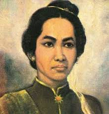

| Pahlawan Pria | | Pahlawan Wanita |
| NAMA PAHLAWAN | DESKRIPSI | MEDIA |
|---|---|---|
| Cut Nyak Dhien | Cut Nyak Dhien adalah seorang Pahlawan Nasional Indonesia dari Aceh yang berjuang melawan Belanda pada masa Perang Aceh. Setelah wilayah VI Mukim diserang, ia mengungsi, sementara suaminya Ibrahim Lamnga bertempur melawan Belanda. Sumber: wikipedia.com |
 |
| R.A. Kartini | Raden Adjeng Kartini atau sebenarnya lebih tepat disebut Raden Ayu Kartini adalah seorang tokoh Jawa dan Pahlawan Nasional Indonesia. Kartini dikenal sebagai pelopor kebangkitan perempuan pribumi. Sumber: wikipedia.com |